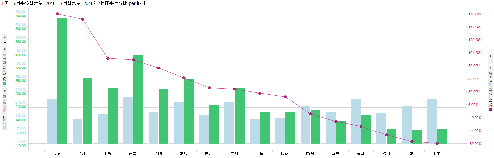

今年席卷我国的水灾涉及的面很广，从南到北很多省份都进入了抗洪抢险的紧急状态。被淹的村庄，内涝的城市，无家可归的百姓，当然很多人会去探究这天灾背后人祸的成分，也有人会歌颂抗洪一线的军民和这其中涌现的感人事迹，我这里就不参合这些了，就带大家一起单纯的探索一下是不是今年的雨水真的特别多？如果是的话这又是为什么呢？
那么从最基础的问题开始，雨水是怎么来的呢？
说到雨水是怎么来的这个话题就有点意思了，在没有被科学武装起来之前，我们未开化的先人们大概心里或多或少都会有点相信下雨这件事是由下面这位仁兄掌管和负责的，虽然没有人见过~~
对的，他就是东海龙王，现在的小朋友对他的技能的了解大概都是从暑期必备套餐西游记(套餐的另外两个是新白娘子传奇和环珠格格~~)中获得的，实际上在写这篇文章之前我也一直认为中国古代的文化或是民间文化都是认为下雨是龙王管的。
那么今天我介绍另外一位雨神给大家认识，其它他才是我们中国人自己的老祖宗最早认可的雨神(雨师)，大概长的是下面这个样子：
雨神亦称雨师，古人对他信仰和对风神信仰一样，他的起源非常古老。《山海经·大荒北经》中提到蚩尤作兵，伐黄帝，请风伯雨师，纵大风雨。《同礼·大宗伯》中记载：“以楠燎祀司中、司命、风师、雨师。”汉朝的时候人们在以箕星为风伯的同时，以毕星为雨师。后来雨师被道教纳入神系，有的称他为龙，有的称他为商羊，还有的称他为赤松子。而民间对雨师也有自己的看法，汉人把玄冥认作雨师，也又有把萍翳为雨师的，到了唐朝的时候还有以李靖为雨师的。《事物异名录》中还说到雨师为冯修，号树德，又名陈华夫。《集说诠真》里还描绘了他的形象：乌髯状汉，左手执盂，内盛一龙，右手若洒水状，称之日雨师陈天君。而直到唐宋以后，从佛教中脱胎出来的龙王崇拜逐渐取代了雨师的位置。
当然还有一些小朋友会跟我说雨神不是他吗？好吧，我竟无言以对~~~~
看到这里有人会说小编你这扯的都是啥呀，都是糟粕嘛，好吧，你长得这么好看说什么都是对的，下面就来学习学习现代科学之精华是怎么看待降雨的形成的。
降雨形成的基本过程是：
空气中的水蒸气在高空受冷凝结成小水点或小冰晶，小水点或小冰晶相互碰撞、并合，变得越来越大，大到空气托不住的时候便会降落下来，当低空温度高于O℃时，便是雨。
由液态水滴(包括过冷却水滴)所组成的云体称为水成云。水成云内如果具备了云滴增大为雨滴的条件，并使雨滴具有一定的下降速度，这时降落下来的就是雨。由冰晶组成的云体称为冰成云，而由水滴(主要是过冷却水滴)和冰晶共同组成的云称为混合云。从冰成云或混合云中降下的冰晶或雪花，下落到0℃以上的气层内，融化以后也成为雨滴下落到地面，形成降雨。
在雨的形成过程中，大水滴起着重要的作用。当水滴半径增大到2—3mm时，水分子间的引力难以维持这样大的水滴，在降落途中，就很容易受气流的冲击而分裂，通过“连锁反应”，使大水滴下降，小水滴继续存在，形成新的大水滴，这是上升气流较强的水成云和混合云中形成雨的重要原因。
降雨主要分类：
锋面雨
在锋面上空气缓慢上升（以每秒厘米的速度计算），在冷气团一侧形成层状降水。
对流雨
如果下垫面高温潮湿，近地面空气强烈受热，引起空气的对流运动，湿热空气在上升过程中，随气温的下降，形成对流云而降水，比如积雨云和浓积云，条件一定时即可降水。特点是强度大，历时短，范围小，还常伴有暴风，雷电，故又称热雷雨。在热带雨林气候区和夏季的亚热带季风气候区多见。
地形雨
暖湿气流在运行的过程中，遇到地形的阻挡，被迫沿着山坡爬行上升，从而引起水汽凝结而形成降水，称为地形雨。地形雨一般只发生在山地迎风坡，背风坡气流存在下沉或者下滑，温度不断增高，形成雨影区，不易形成地形雨。
气旋雨
气旋中心附近气流上升，引起水汽凝结而形成降水，称为气旋雨。常见的有热带气旋和温带气旋带来的降水。
另外降雨的大小一般用降水量来衡量。一天之内50毫米以上降水为暴雨（豪雨），25毫米以上为大雨，10-25毫米为中雨，10毫米以下为小雨，75毫米以上为大暴雨（大豪雨），200毫米以上为特大暴雨。
知道了降雨形成的基本原因以及不同类型的降水量，我们就不难理解和分析出为什么同样是生活在地球上，有的地方降水多有的地方降水少了。这基本上是取决于每个地方所处的地理位置和气候条件是什么样子的：周围如果江河湖海比较多呢，就容易形成对流雨；如果正好经常处于冷暖空气交汇的地方呢，就容易遭遇锋面雨；如果正好处在大山的迎风面又碰巧风所携带的是暖湿气流，那么就容易产生地形雨；经常遭受台风天气的地方则常见气旋雨，如果以上几种情况都不经常有的地方那么就会相对的比较干旱了。从下这两幅图世界和我国的年降水量分布图上我们就可以总结出一些基本的规律：
世界降水规律：
1、赤道附近降水多，两极地区降水少。
2、南北回归线附近大陆东岸降水多，大陆西岸降水少。
3、中纬度沿海地区降水多，内陆地区降水少。
4、山地迎风坡降水多，背风坡降水少。
(不知道是哪个审美大仙作的这个图，这配色，这字体，还有这标题的阴影是什么鬼~~)
我国降水的总体空间规律很简单：由东南沿海向西北内陆逐渐递减。
那么紧接着好奇宝宝们又发问了，既然降水在总体上有规律可循，而且目前对局部的天气预报也可以做到相对比较准确了，为什么我们还会栽倒在这些由于突降暴雨所引发的灾难面前呢？是原先的规律发了生了变化了呢？还是我们防范措施做的不够到位？还是两者皆有？
首先让我们从数据出发，看一看今年的降水是不是超出正常的历史规律。我想采用的方法是对比历年来的降水量的数据，对比的维度有时间和地点两个。于是我从历年发布的中国年鉴到摘录出主要城市的历年的月平均和年平均降水量，运用数据分析工具Spotfire作了一些简单的分析(关于Spotfire可以看我另外一篇文章里的介绍:《大道至简–利用Spotfire云服务提供在线数据分析》 )，我们一起瞧一瞧可以从中发现一些什么样的规律。
原始数据介绍
中国国家统计局历年都会发布一份统计年鉴，相当于是对上一年国家各各方面的运行数据进行一个统计结果的公示。历年年鉴的查看和下载地址是: [http://www.stats.gov.cn/tjsj/ndsj/](http://www.stats.gov.cn/tjsj/ndsj/) .
年鉴当中的”资源与环境”栏目下面有我国主要城市(省会和直辖市)的每月平均降水量信息，如下图：
一般每年的年鉴都要在下半年10月份左右出版，因此2016的年鉴数据目前还没有(2016的年鉴里统计的是2015年的国家主要运行数据)，所以下面的历史数据分析是基于1996至2014年的数据进行的，对于进20年的历史规律的总结这样的数据应该是比较充分的了，当然如果能有2015的数据是更好的。
在时间分布上，主要城市的降水总量每一年的变化波动看上去比较大，不过我们把平均值和最高、最低值列出来，可以发现，就算是最高(33037 mm)和最低(24396 mm)的年份相对于平均值(27168 mm)的偏移也在10%左右，可以说总体上在全国范围来看，历年的降水总量的变化并不是特别的夸张。具体地分析每历年来每月的平均降水信息，可以发现我国降水在时间上的分布规是春夏降水较多，秋冬降水较少。
注意到图中两个峰值，一个是1998年一个是2010年，这两年的全国主要城市的年降水总量之和都超过了3万毫米。从按月分布图上可以看出，1998年这3万毫米降水所发生的时间相对比较集中，在7月份的时候非常明显的形成了一个峰值；而2010年的相对分散一些，降水主要分布在7月和8月两个月。所以当我百度搜索这两年洪水的时候，可以看到1998年的被认定为”特”大洪水，且相关搜索结果有285万个，而2010年是大洪水，相关搜索结果也相对较少有198万个，可见98年的大水给人们带来的伤痛更甚，记忆更深。
在空间分布上，年平均降水量最多的前三个城市是广州，海口和南昌，降水量最少的是兰州，乌鲁木齐和银川。而地理好的小朋友可以看出现面这幅图所示的空间分布形势和上文中的我国降水量分布的空间规律(由东南沿海向西北内陆逐渐递减)大体上是一致的。
但是明眼人可能已经发现其中南昌，长沙以及武汉这三个相对中部的城市比很多的东南沿海城市的降水量更充分，这是为什么呢？让我们打开地图看看这三个城市所处的位置是不是有其特殊之处？
首先来看南昌，地处长江以南，其东北方向是中国最大的淡水湖鄱阳湖，东南方向是军山湖，伴有赣江穿城而过，这种多江多湖的地形本身就会有更多的水分蒸发，容易形成对流雨，再加上我们看到南昌的西北至西部是茫茫大山–罗霄山，那么当夏季风从东面和东南面吹过来的时候，就容易在山的迎风面形成地形雨。
接着看看长沙，会不会和南昌有类似之处呢？果然长沙的四周也是多山多水，北面是五大湖之一的洞庭湖，东面是和江西交界的罗霄山，西面是雪峰山，南面则是衡山，这样的地形看上去会形成比较多的对流雨，因为如果没有什么风的时候，地表蒸发的水蒸汽由于周围大山的阻挡不容易散开，在高空遇冷后就容易形成降雨。由于长沙和南昌不同的是，在春夏季东南风为主的时候，长沙是相对处于大山的背风面的，因而不会有太多的地形雨，这在一定程序上或许可以解释的通为什么长沙多雨但是并没有南昌多。
最后再看一个城市武汉。地处传说中的千湖之省湖北，我们随便数了一下武汉周围有一定规模的湖泊就有十多个，如下图黄色部分，再加上长江穿城而过，由此形成的湿润多雨的局部小气候就很容易理解了。
上面根据1996年到2014年的历史数据，我们从时间和空间两个维度简单的分析了我国降水的一些基本规律。有了这些历史数据，再加上今年的数据就可以进行对比分析，来回答前半段问题了，今年的雨水是不是特别多呢？由于国家统计年鉴的数据只发行到2015年，我们没法从官方的来源获取到权威的2016年这些主要城市的降水数据，所以我只能通过百度，最终找到一个相对靠谱的帖子(网址: http://bbs.typhoon.gov.cn/read.php?tid=73737&fid=70 )，有牛人在这个帖子里一直更新着今年南方主要城市的降水量，虽然只有南方16个城市，但是我们也可以从中得到一些答案了。帖子里截取出来的原始的2016年南方主要城市月降水量数据如下：
单纯的看这些数据，我和你们一样无感，所以我们从哪里开始对比呢？从各方媒体的报道量和内容的直观感觉，在刚刚过去的7月份我国遭遇洪灾的地区比较多，那么我们就先对7月的数据作一些对比吧。
首先计算出从1996年到2014年这些城市的7月平均降水量，以及这19个7月中出现过的最高和最低降水量。将今年7月的降水量和历史平均降水量进行对比，对比的指标是距平百分比，计算方法是：（2016年7月降水量 － 历年7月平均降水量）／ 历年7月平均降水量 ＊ 100％。最后我们得到的结果是：
16个南方城市中，有10个城市今年7月的降水量高于历史平均值，其中武汉和长沙都比平均值高出1.5倍还要多，长沙的降水量更是创下新的历史最高值，另外南昌和南京的7月降水量也高出平均值将近一倍左右，而杭州、贵阳以及南宁在过去的这个7月降水比较少还不到历史平均值的一半。
下面的统计图表中，绿色的柱子是今年7月降水量，蓝灰色的1996年至2014年的历史7月平均降水量，可以说7月份南方这些城市的降水量总体是高于历史同期的。

单独分析了7月份之后，我们再用同样的方法和指标对比一下整个上半年的降水量。
相对上面7月的数据16个城市中有10个城市的降水量高于历史平均值，对于整个上班年的降水量16个南方主要城市中有14个都高于历史平均，其中广州接近历史同期平均值的一倍，也是创下了新的历史同期最高降水量，大到了惊人的1785.9 mm，这几乎接近于广州历史的全年平均降水量(1820 mm)了。
由此我们可以得出结论，今年的降水量相对于往年的确是偏高的！那么这是为什么呢？
在查阅资料的过程中，有一篇论文(网址: http://www.docin.com/p-829763302.html )专门分析了1998年洪水和2010年洪水的相似和不同之处，当中列举到的影响降水和主要大河水位的因素有厄尔尼诺现象，高原的积雪厚度，夏季风等等。这当中对大范围降水的影响最大的恐怕就是我们经常会听说的厄尔尼诺了吧，那么我们接下来就来科普一下什么是厄尔尼诺，以及为什么它会对我国的降水造成这么大的影响。
一般来说我们在媒体报道里经常听到的有厄尔尼诺暖流，厄尔尼诺现象和厄尔尼诺事件，即使不是完全清楚这三者的区别，单从字面上我们也可以看出它们的关系很有可能是由厄尔尼诺暖流形成厄尔尼诺现象引发厄尔尼诺事件。那么事实上到底是不是这样的呢？请看百度百科关于这三者的定义：
厄尔尼诺暖流，太平洋一种反常的自然现象，在南美洲西海岸、南太平洋东部，自南向北流动着一股著名的秘鲁寒流，每年的11月至次年的3月正是南半球的夏季，南半球海域水温普遍升高，向西流动的赤道暖流得到加强。恰逢此时，全球的气压带和风带向南移动，东北信风越过赤道受到南半球自偏向力（也称地转偏向力）的作用，向左偏转成西北季风。西北季风不但削弱了秘鲁西海岸的离岸风——东南信风，使秘鲁寒流冷水上泛减弱甚至消失，而且吹拂着水温较高的赤道暖流南下，使秘鲁寒流的水温反常升高。这股悄然而至、不固定的洋流被称为“厄尔尼诺暖流”。
厄尔尼诺现象是指太平洋东部和中部的热带海洋的海水温度异常地持续变暖，使整个世界气候模式发生变化，造成一些地区干旱而另一些地区又降雨量过多的气候现象。
厄尔尼诺现象持续时间三个月以上的事件定义为厄尔尼诺事件，具体来说气象界是以若干个关键海域的海表温度至少连续三个月正距平（比常年同期偏高）在0.5℃以上，或者季距平达到0.5℃以上为依据的。
定义略长，我们简单点说，就是太平洋某个地方的海表温度在某个时间段内温度比常年同期高0.5度以上就会形成这个厄尔尼诺事件，从而造成某些地区干旱而另一些地区降水过多的异常气候。某个时间段一般是指每年的11月至次年的3月，也就是我们的冬天，南半球的夏天，从时间段上来看基本上是会跨年的；太平洋某个地方指的是南半球靠近赤道的地方，差不多是下图中最红的位置：
根据温度距平的累积值我们可以对厄尔尼诺的强度进行划分：
历史上厄尔尼诺规模显著的年份有这些：1790-1793、1828、1876-1878、1891、1925-1926、1982-1983、1997-1998、2014-2016
规模较小的年份有这些：1986-1987、1991-1994、2002-2007、2009-2010
最近这一次发生的厄尔尼诺事件，从2014年5月开始一直持续2016年春末夏初，跨越2014、2015、2016年，持续时间长达二十多个月，可以说是最长的厄尔尼诺年。中国气象局的信息显示，2015年,厄尔尼诺海温距平指数(升温幅度)累计达到18.4℃，已达极强厄尔尼诺事件的标准。据最新大气海洋监测结果，自2016年4月赤道中东太平洋海温迅速衰减，次表层冷水持续东移并向表层抬升，最近一周赤道东太平洋海表出现海温负距平，所以本次厄尔尼诺事件于2016年4月结束。根据最终的测定结果，2015/2016年峰值为2.9℃、累积强度为26.1℃，在，而1997/1998年厄尔尼诺事件的峰值为3.6℃、累积强度为31.9℃，可见此次厄尔尼诺事件的峰值和累积值均稍弱于97/98年那一波。因此我们可以看到南方主要城市截止到7月的降水总量，2016年也略少于1998年：
具体到每个城市，也可以明显的看出98年的降水在南方主要集中在长江流域，其中南昌，长沙，武汉，正是上文中我们特别分析的三个主要城市，而2016年广州的降水量已经高得离谱了：
好啦，以上就是一个外行人对今年上半年发生在我国的降水异常形象及其成因的一点粗浅分析啦，希望可以帮助大家增长一些关于降雨的认识。